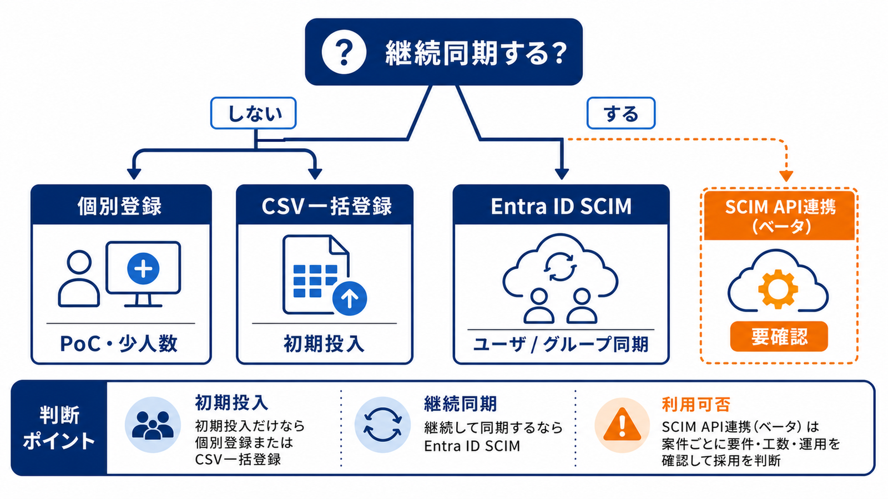
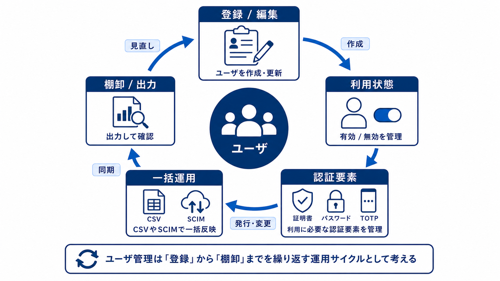
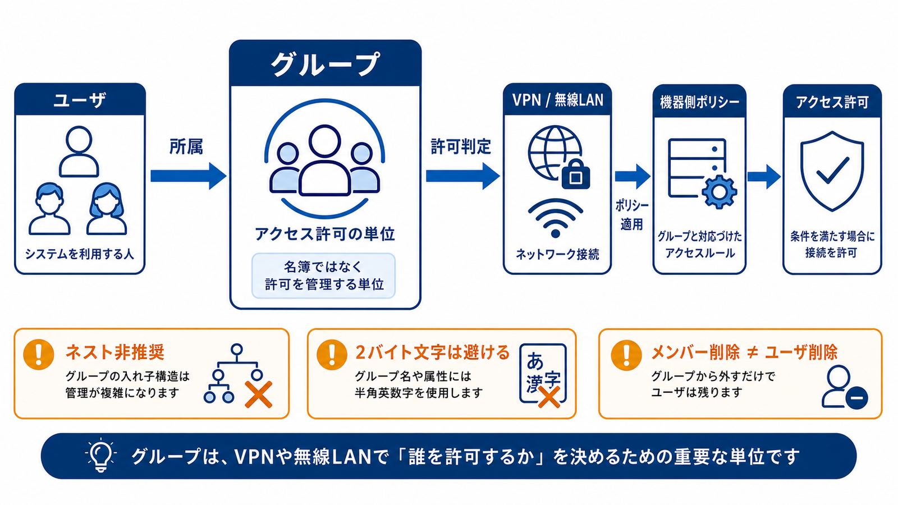
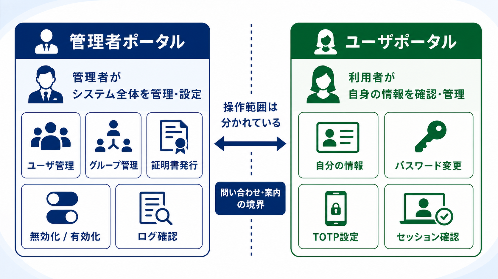
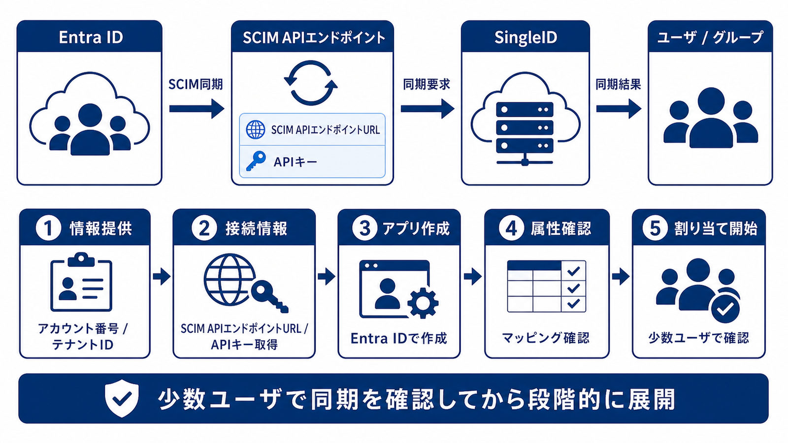
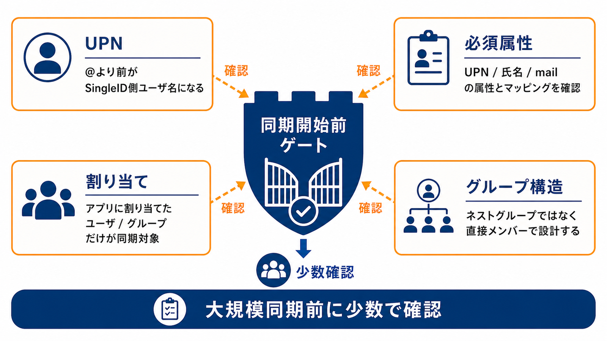
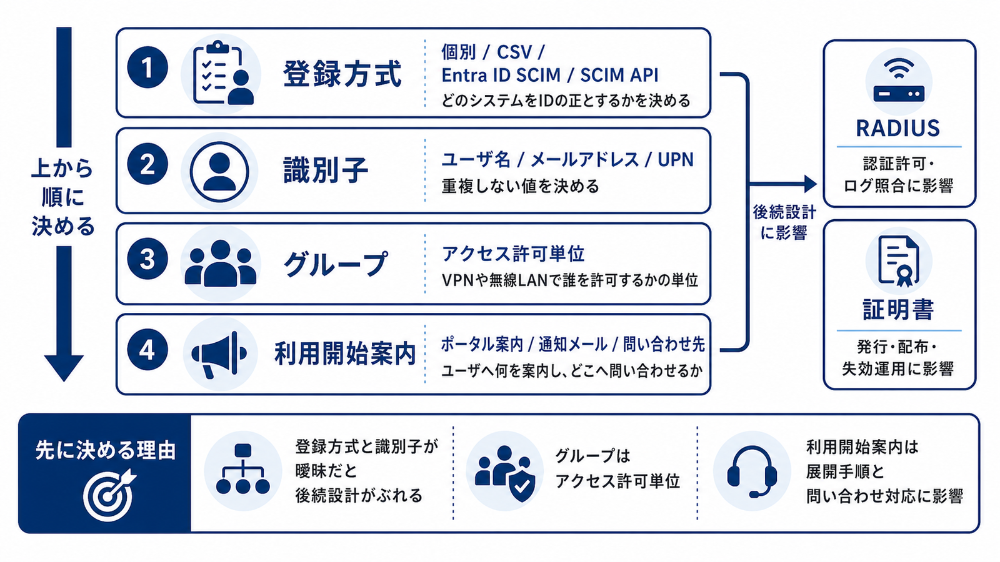

ID管理
ユーザ、グループ、管理者、ユーザポータル、Entra IDのSCIM連携を、認証基盤の入口として学ぶ。
Part 1 Visual / Section 2
ユーザ、グループ、管理者、ユーザポータル、Entra IDのSCIM連携を、認証基盤の入口として学ぶ。
Section 2
Section 2 / Registration Methods
ユーザ登録方式は、初期投入だけでよいか、既存ID基盤と継続同期するかで選ぶ。ユーザ名とメールアドレスの一意性、同期後の更新方法を方式ごとの判断材料にする。

Section 2 / 1
Section 2 / User Lifecycle
管理者ポータルのユーザ一覧では、登録から無効化、証明書、パスワード、一括登録、エクスポートまでを扱う。案件では操作そのものより、運用の流れを決める。

Section 2 / 2
Section 2 / Group Design
グループはユーザをまとめるだけでなく、VPNや無線LANで誰を許可するかを決める単位になる。機器側ポリシーと対応づけて設計する。

Section 2 / 3
Section 2 / Responsibility
ID管理では、管理側で行う操作と、ユーザ自身が実施できる操作が分かれている。問い合わせや手順書の作成範囲にも影響する。

Section 2 / 4
Section 2 / Entra ID SCIM
SCIM連携は、SingleIDへアカウント番号とEntra IDテナントIDを提供し、SingleIDから提供されるSCIM APIエンドポイントURLとAPIキーを使ってEntra ID側で設定する。

Section 2 / 5
Section 2 / Entra ID SCIM Cautions
Entra IDのSCIMプロビジョニングでは、同期キー、必須属性、割り当て、グループ構造を先に決める。通知メールはSection 7の運用管理で扱う。

Section 2 / 6
Section 2 / Design Points
ID管理は、ユーザをどう登録し、何を一意な識別子にし、どのグループを認証許可の単位にするかを先に決める。あわせて利用開始時に何を案内するかを決めると、RADIUSや証明書の設計、展開手順がぶれにくくなる。

Section 2 / 7